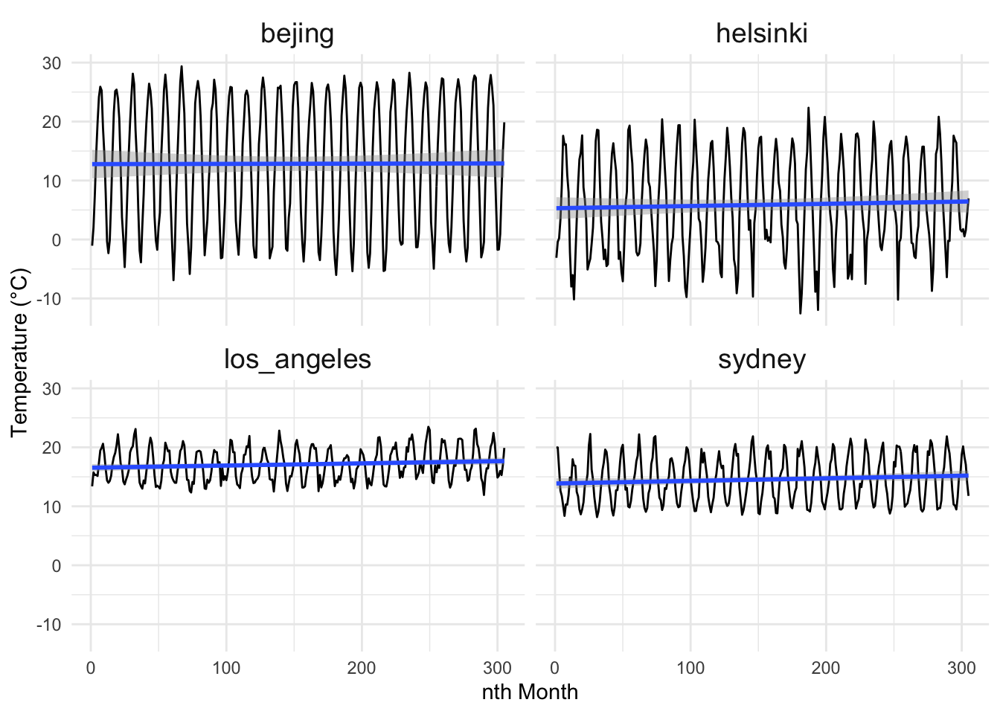
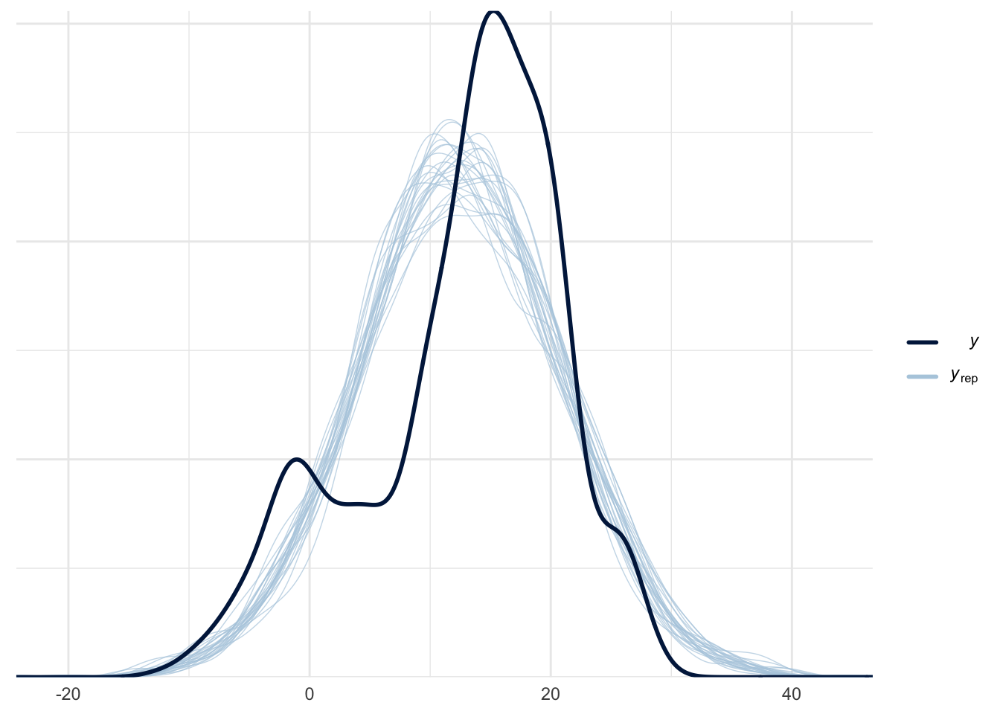
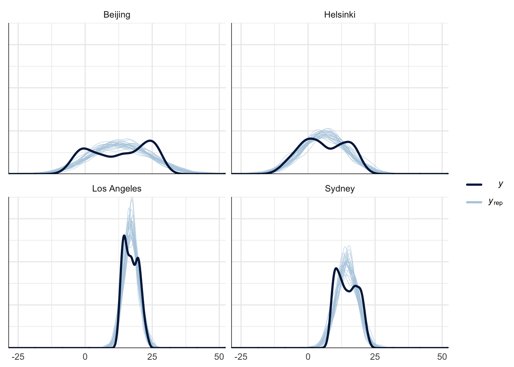
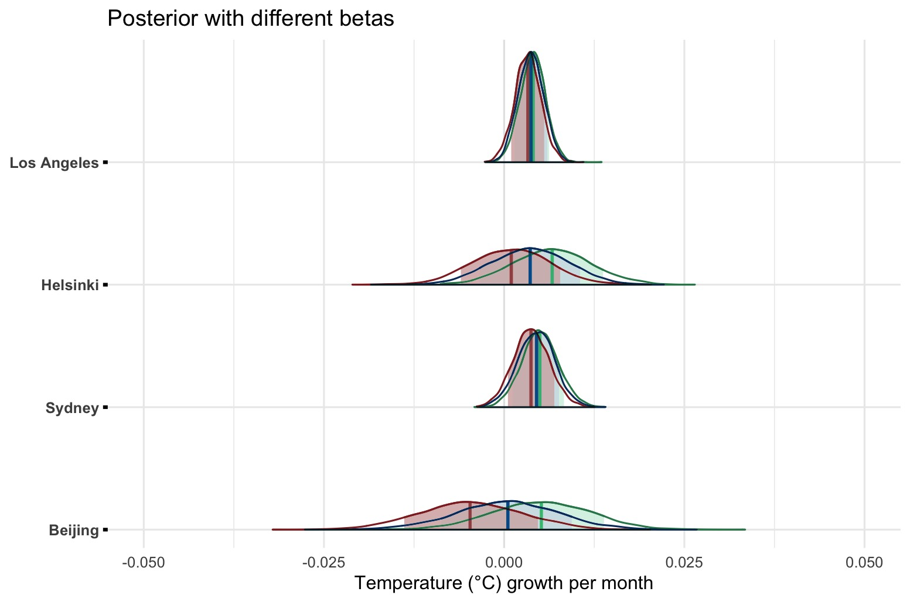
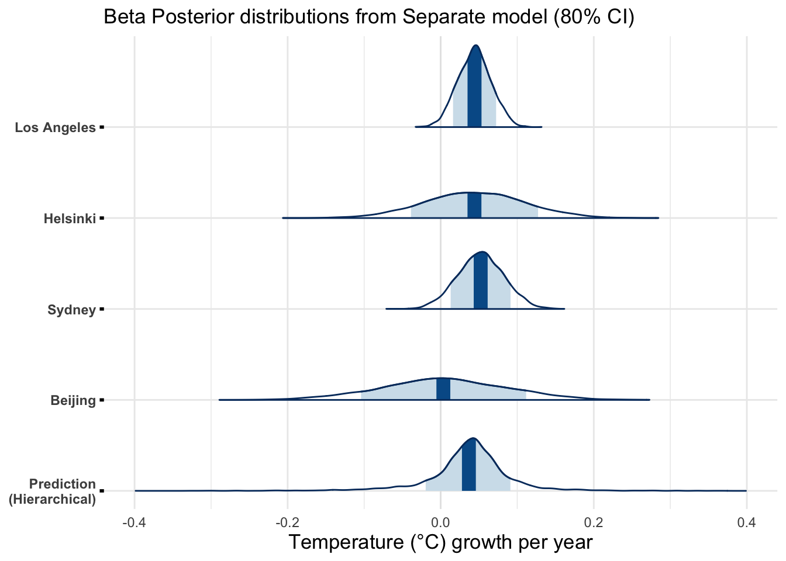

Global Warming Rate Estimation using Linear Gaussian Model
Introduction
There has been, and still is, a lot of controversy about the presence and magnitude of climate change. According to many studies, earth’s temperature has been steadily rising due to different factors, such as increased global emissions and deforestation. These studies propose differing values for the rate of the warming. Based on a report of IPCC, human-induced warming is likely increasing the average temperatures between 0.1°C and 0.3°C per decade.
The main analysis problem of this project is to find out the presence and the rate of global warming. We aim to model the global warming rate using Bayesian workflow. The analysis will be carried out using temperature observations gathered from 4 cities (Beijing, Helsinki, Los Angeles, Sydney) from a 25-year time span. We will fit three variants of the Gaussian linear model to average monthly temperatures of the four different locations. The goal is then to find an estimate for the slope of the linear model. As an example, the monthly temperature fluctuation of the target cities are illustrated in Figure 1.
Data
| idx | temp | location |
|---|---|---|
| 1 | 13.38889 | los_angeles |
| 2 | 15.74008 | los_angeles |
| 3 | 15.31541 | los_angeles |
| 4 | 15.32037 | los_angeles |
| 5 | 15.14695 | los_angeles |
The data is gathered from the Average Daily Temperature Archive of the University of Dayton which originates from the National Climatic Data Center. The extracted features were month, year and temperature (F). For each city, we have 9250 records covering every month from 1.1.1995 to 13.5.2020, having a data set of 37000 rows.
We have done modest data preparation mainly for the temperature. Firstly, we converted the Fahrenheit temperatures to Celsius. Secondly, null values were omitted from the dataset. The daily temperature observations were aggregated into monthly averages which were then re-indexed by turning into month-indices (1 to 305).
Models
We have chosen to use three variants of the linear Gaussian model for this analysis. This means that we assume the change in the average temperature to be linear. Even if the actual dependency is nonlinear, the linear model should be able to capture the overall trend of the temperatures. In addition, the time span of our data (25 years) is too narrow to reliably fit more sophisticated models accurately.
In our first model, the separate model (Equation 1), we treat each of the four measurement locations separately, i.e., we assume there to be no connections between the locations. A linear Gaussian model is fitted separately to the data of each measurement location.
\[ y_i \sim N(\alpha_i + \beta_i x_i,~\sigma_i) \tag{1}\]
In the pooled model (Equation 2), we assume there to be no distinction between the measurement locations. In the model all data is gathered together, and a single linear model is fitted to the data. With the combined data, we expect to see higher variances and larger posterior intervals due to the different natures of the measurement locations.
\[ y \sim N(\alpha + \beta x,~\sigma) \tag{2}\]
In the hierarchical linear model (Equation 3), we assume that slopes are drawn from a common hyper prior distribution. The hierarchical model assumes that the possible increases in the average temperature correlates between locations. Or put simply: If there is warming, the model assumes it to be a global phenomenon. The other parameters, intercept and standard deviation, are assumed to be individual to the measurement location since they represent the annual average (at the intercept) and the seasonal fluctuation of the temperature.
\[ \begin{aligned} y_i \sim &N(\alpha_i + \beta_i x_i,~\sigma_i) \\ \beta_i \sim &N(\mu_0, \sigma_0) \end{aligned} \tag{3}\]
Priors
We chose to use weakly informative normal priors for all the models to avoid any biases that more informative priors may introduce. In particular, we wanted a very weakly informative prior for the slope parameter to maximize the influence of the data on the outcome.
In our model, the slope parameter is of the form degrees per month, which means that the values for the slope are expected to be quite close to \(0\). The prior for the slope was chosen to be \(N(0, 0.1)\). The mean was chosen to be \(0\) to avoid any biases – it is equally likely for the slope to be positive or negative. Slope of \(0.1 °C\) corresponds to over \(1\) degree increase in the average for each year. The rate of \(1\) degree per year is very unlikely and thus the prior should be very weakly informative.
\[ \begin{aligned} \beta &\sim N(0, 0.1) \\ \beta_i &\sim N(0, 0.1) \end{aligned} \]
The prior for the intercept, \(N(10, 20)\), is loosely based on available information of the average temperature on earth (\(14°C\) with oceans, \(8°C\) land only). The standard deviation was intentionally set quite high to keep the prior weak. In our model the intercept is in the beginning of the year 1995, which means that the intercept represents the annual average temperature close to that time.
\[ \begin{aligned} \alpha &\sim N(10, 20) \\ \alpha_i &\sim N(10, 20) \end{aligned} \]
For the standard deviation in the linear model, \(N(0, 20)\) was used. The standard deviation corresponds to the annual fluctuations in the monthly averages. The prior covers a 40 degree within 1 std range and hence it should be weakly informative even in the locations with high fluctuations in the monthly averages, such as Helsinki.
\[ \begin{aligned} \sigma &\sim N(0, 20) \\ \sigma_i &\sim N(0, 20) \end{aligned} \]
In the hierarchical model the hyper priors for the mean and standard deviation of the slope were chosen to be \(N(0, 0.1)\) based on the prior used in the separate model.
\[ \begin{aligned} \mu_0 \sim & N(0, 0.1) \\ \sigma_0 \sim & N(0, 0.1) \end{aligned} \]
MCMC sampling
We used RStan to perform the Markov Chain Monte Carlo simulation. Three Stan models for separate, pooled, and hierarchical model was used, respectively. The models use hard-coded priors, which were manually altered during sensitivity analysis.
Hierarchical model
Show the code
// Separate Gaussian linear model
data {
int<lower=0> N; // number of data points
int<lower=1> J; // number of groups
vector[N] x; // dates
vector[N] y; // temperatures
array[N] int<lower=1, upper=J> g; // group indicators
}
parameters {
// Separate parameters for all groups
vector[J] alpha; // intercept
vector[J] beta; // slope
vector<lower=0>[J] sigma; // std
}
transformed parameters {
// Linear model using separate intercept and slope for all sites
vector[N] mu;
for (i in 1:N) {
mu[i] = alpha[g[i]] + beta[g[i]] * x[i];
}
}
model {
alpha ~ normal(10, 20); // Normal prior for the intercept
beta ~ normal(0, 0.1); // Normal prior for slope
sigma ~ normal(0, 20); // Half normal prior for Std
// Observation model using the separate parameters
for (i in 1:N) {
y[i] ~ normal(mu[i], sigma[g[i]]);
}
}
generated quantities {
array[N] real log_lik;
array[N] real y_rep;
for (i in 1:N) {
y_rep[i] = normal_rng(mu[i], sigma[g[i]]);
log_lik[i] = normal_lpdf(y[i] | mu[i], sigma[g[i]]);
}
}Pooled model
Show the code
// Pooled Gaussian linear model
data {
int<lower=0> N; // number of data points
vector[N] x; // dates
vector[N] y; // temperatures
}
parameters {
// Common parameters
real alpha; // intercept
real beta; // slope
real<lower=0> sigma; // std
}
transformed parameters {
// Linear model
vector[N] mu = alpha + beta*x;
}
model {
alpha ~ normal(10, 20); // Normal prior for intercept
beta ~ normal(0, 0.1); // Normal prior for slope
sigma ~ normal(0, 20); // Half normal prior for Std
// Observation model
y ~ normal(mu, sigma);
}
generated quantities {
array[N] real log_lik;
array[N] real y_rep;
for (i in 1:N) {
y_rep[i] = normal_rng(mu[i], sigma);
log_lik[i] = normal_lpdf(y[i] | mu[i], sigma);
}
}Hierarchical model
Show the code
// Hierarchical Gaussian linear model
data {
int<lower=0> N; // number of data points
int<lower=1> J; // number of groups
vector[N] x; // dates
vector[N] y; // temperatures
array[N] int<lower=1, upper=J> g; // group indicators
}
parameters {
// Separate intercept and std. Hierarchical slope
vector[J] alpha; // intercept
vector[J] beta; // slope
vector<lower=0>[J] sigma; // std
// Params for beta
real mu0; // mean
real<lower=0> sigma0; // std
}
transformed parameters {
// Linear model using separate intercepts and hierarchical slopes
vector[N] mu;
for (i in 1:N) {
mu[i] = alpha[g[i]] + beta[g[i]] * x[i];
}
}
model {
mu0 ~ normal(-1, 0.1); // Hyper priors
sigma0 ~ normal(-1, 0.1);
alpha ~ normal(10, 20); // Normal prior for the intercept
beta ~ normal(mu0, sigma0); // Normal prior for slope
sigma ~ normal(0, 20); // Half normal prior for Std
// Observation model
for (i in 1:N) {
y[i] ~ normal(mu[i], sigma[g[i]]);
}
}
generated quantities {
array[N] real log_lik;
array[N] real y_rep;
real beta_pred;
beta_pred = normal_rng(mu0, sigma0);
for (i in 1:N) {
y_rep[i] = normal_rng(mu[i], sigma[g[i]]);
log_lik[i] = normal_lpdf(y[i] | mu[i], sigma[g[i]]);
}
}The Stan models were run with 4 chains and 500 + 500 iterations per chain. For the hierarchical model, the iterations were raised to 1000 + 1000 to reduce \(\hat{R}\) values.
data <- list(
x = temp_data$idx, # month idx
y = temp_data$temp, # temps
g = temp_data$group, # group indicators
N = nrow(temp_data), # number of data points
J = length(cities) # number of groups
)
fit_sep <- separate$sample(data=data)
fit_pool <- pooled$sample(data=data)
fit_hier <- hier$sample(data=data, step_size = 0.1,
adapt_delta=.95)With the hierarchical model, approximately 5% to 15% of transitions ended in divergence during warm-up. This was probably due to the scale parameter, standard deviation, beta getting zero values as a result of the narrow half-normal hyper prior. This was later addressed by setting a custom adapt_delta parameter for the sampling.
Convergence diagnostics
Since the separate and hierarchical have different variables for each city, we only check the convergence for one city (Beijing). Pooled model on the other hand, has naturally one alpha and beta.
Separate model
| variable | rhat | ess_bulk |
|---|---|---|
| alpha[4] | 0.9998801 | 2751.634 |
| beta[4] | 1.0001953 | 2997.470 |
| sigma[4] | 1.0020886 | 4373.331 |
For the separate model, the R values for the slope and intercept are below the commonly used threshold 1.01. Hence, the chains are converged and the results can be considered reliable. The effective sample sizes (ess_bulk) are high, which means that there is little correlation between the samples, i.e., the model should capture the whole distribution. No problems with divergences or tree depth were encountered.
Pooled model
| variable | rhat | ess_bulk |
|---|---|---|
| alpha | 1.0002801 | 1880.207 |
| beta | 0.9999699 | 1983.445 |
| sigma | 1.0030777 | 1981.519 |
For the pooled model the \(\hat{R}\) values are slightly higher than with the separate model but they are less than 1.01. Hence, we can confidently assume that the chains have converged. The effective sample sizes ess_bulk are about half of the sizes from separate model. This is expected as the we have “pooled” all the data in to a single group. The values are still high enough and should not cause any problems. No problems with divergences or tree depth were encountered.
Hierarchical model
| variable | rhat | ess_bulk |
|---|---|---|
| alpha[4] | 1.003701 | 1942.1847 |
| beta[4] | 1.006525 | 2129.3775 |
| sigma[4] | 1.001826 | 2967.4605 |
| mu0 | 1.002452 | 1821.2931 |
| sigma0 | 1.008439 | 442.9684 |
For the hierarchical model, the \(\hat{R}\) values for the slope and intercept are slightly above the commonly used threshold 1.01. In addition, \(\hat{R}\) values for the hyper prior parameters are above the threshold especially for sigma0. The \(\widehat{ESS}\) of sigma0 is also considerably smaller than \(\widehat{ESS}\) of other parameters. This is probably due to divergent transitions during warm-up. We increased the adapt_delta and the number of iterations from the initial to 500 + 500 to reduce the \(\hat{R}\) values.
All divergent transitions happened during warm-up, which is not as serious as divergences after warmup. However, the percentage of the divergent transitions is quite high, which may negatively affect the convergence and thus reliability.
Posterior predictive checks
Posterior predictivity was tested by sampling replicated values from the posterior distribution and comparing them to the empirical data. As can be seen from Figure 2, Figure 3, and Figure 4 the model can not capture the true nature of the data due to the annual fluctuation in the monthly average temperature. However, in our case we are mainly interested in the annual mean and its increase, i.e., the discrepancies between the replicated and actual data should not be an issue.


Model Comparison
The models are compared using PSIS-LOO values and the reliability of the estimates is assessed using pareto-k values.
| stat | separate | pooled | hierarchical |
|---|---|---|---|
| 1st Qu. | -0.077 | -0.148 | -0.098 |
| 3rd Qu. | 0.021 | -0.067 | 0.016 |
| Max. | 0.277 | 0.097 | 0.235 |
| Mean | -0.029 | -0.106 | -0.041 |
| Median | -0.025 | -0.120 | -0.032 |
| Min. | -0.382 | -0.247 | -0.332 |
| loo_separate_model | loo_pooled_model | loo_hierarchical_model |
|---|---|---|
| -3828 | -4317 | -3826 |
All models have k-values less than 0.5. Hence, the obtained elpd values can be considered reliable. Based on the obtained values, the hierarchical model had the greatest elpd-value (-3826) and it is the most suitable model. However, due to the convergence issues with the hierarchical model the separate model can be considered a good alternative.
Prior Sensitivity
When using sensible priors, the model is not greatly affected by the prior choice as there are sufficient data points to reduce the prior’s effect on the posterior model.

Discussion
During the analysis process we noticed that using monthly averages seems to induce a lot of variance to the results due to the annual fluctuation in temperature. This can be observed by comparing the confidence intervals from Sydney and Los Angeles (less fluctuation) to the intervals of Helsinki and Beijing (more fluctuation). Tighter intervals were obtained for the slope for cities with less annual fluctuation.
The hierarchical model produced larger PSIS-LOO values than the separate model. However, due to the divergences and \(\hat{R}\) issues, the separate model should also be considered as a viable option. The Stan code of the hierarchical model should be revised to reduce the number of divergent transitions during warm-up.
Possible improvements for the current model include using data from a wider time span and using other metrics instead of the monthly averages, which induce a lot of uncertainty to the posterior distributions.
Conclusion
With all models used in this report the predicted mean of the slope parameter was positive and on the order of 0.4 degrees per decade. The 80% credible intervals are quite wide, however, even the lower bound is on the positive side with most cities. Beijing has the widest interval regardless of the used model and it includes also negative slope values. Figure 5 presents the posterior distributions of the slope parameter for the separate model.

The used priors do not significantly affect the results. Thus, we can conclude that the results should not be biased in any way. The used models produce results that agree with other research done on the topic. The observed global warming rate is around 0.1-0.3 degrees per decade (IPCC, n.d.). Our model’s 80% posterior interval for the slope was around 0.02-0.08 degrees per year or around 0.2-0.8 degrees per decade (Figure 5). However, the results of this report cannot be considered accurate nor reliable. More sophisticated analysis is needed to obtain more accurate estimates for the rate of warming.
References
Allen, M.R., O.P. Dube, W. Solecki, F. Aragón-Durand, W. Cramer, S. Humphreys, M. Kainuma, J. Kala, N. Mahowald, Y. Mulugetta, R. Perez, M. Wairiu, and K. Zickfeld, 2018: Framing and Context. In: Global Warming of 1.5°C. An IPCC Special Report on the impacts of global warming of 1.5°C above pre-industrial levels and related global greenhouse gas emission pathways, in the context of strengthening the global response to the threat of climate change, sustainable development, and efforts to eradicate poverty [Masson-Delmotte, 15 V., P. Zhai, H.-O. Pörtner, D. Roberts, J. Skea, P.R. Shukla, A. Pirani, W. Moufouma-Okia, C. Péan, R. Pidcock, S. Connors, J.B.R. Matthews, Y. Chen, X. Zhou, M.I. Gomis, E. Lonnoy, T. Maycock, M. Tignor, and T. Waterfield (eds.)]. Cambridge University Press, Cambridge, UK and New York, NY, USA, pp. 49-92